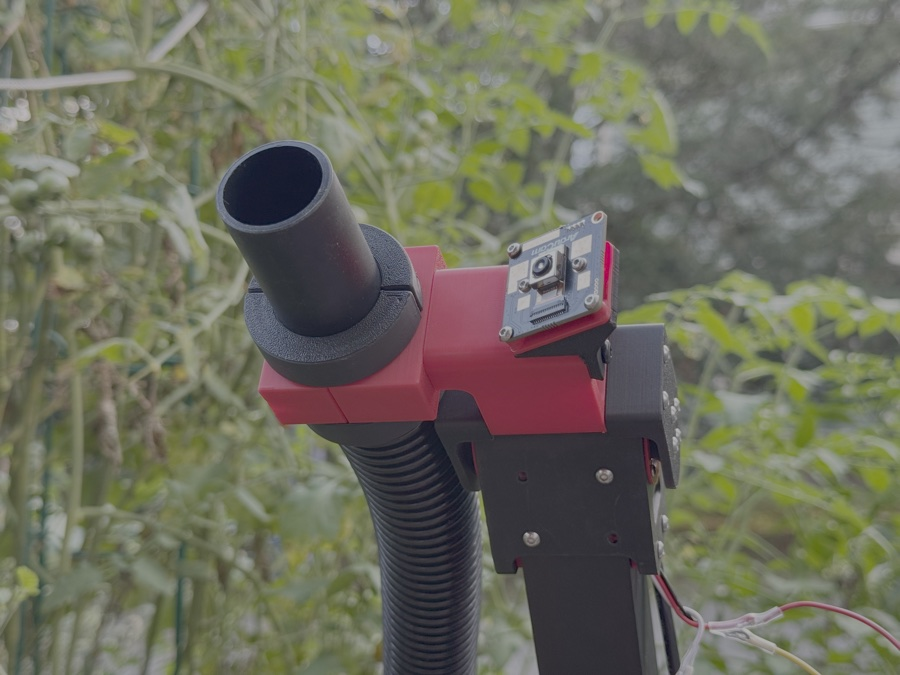
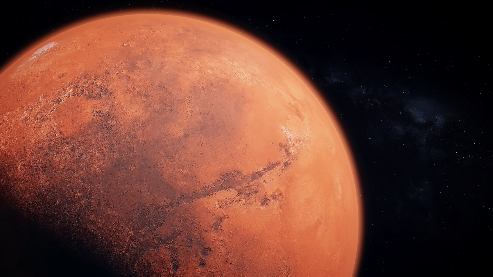

A custom 4-DOF robot arm that uses stereo vision and analytic inverse kinematics to locate cherry tomatoes and pick them with a vacuum end effector.

WIP submission to the University Rover Challenge 2027
Last Updated: September 20, 2026